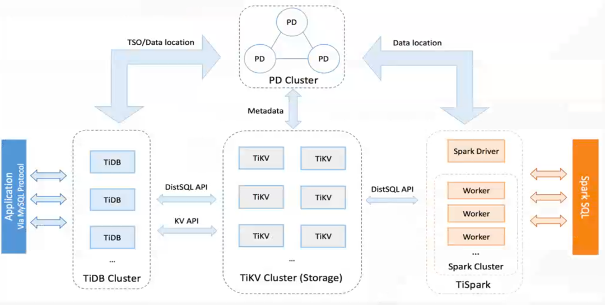
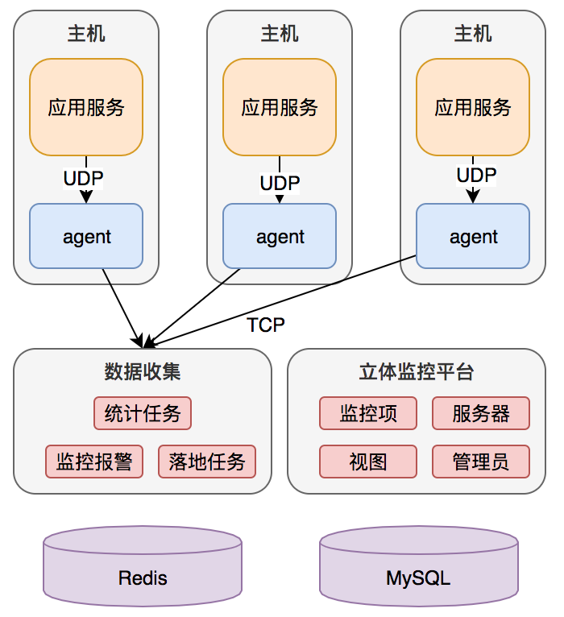
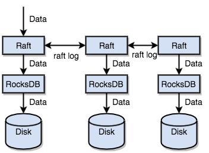

architect/架构师
智能互联网之核心技术实践篇
智能互联网之关键系统实践篇
配置中心设计与实践
配置中心定义
应用服务配置统一存储和管理的可视化系统。
配置
配置是独立与程序的只读变量
配置伴随应用的整个生命周期
配置可以有多种加载方式：热加载、重启加载
配置需要治理（权限控制，不同环境、集群配置管理）
配置中心目的
1、服务重启的成本高
2、随着程序功能的日益复杂、程序的配置日益增多：各种功能的开关、参数的配置、服务器的地址等
3、对配置的期望也越来越高，配置修改后实时生效、灰度发布，分环境、分集群管理配置，完善的权限审核机制
4、采用分布式的开发模式，随着服务的不断增多，项目之间的调用复杂度成指数升高，每次上线新的项目时苦不堪言，需要把配置的部分从项目中剥离出来，因此需要配置中心
为什么不采用ZK，etcd？
1、ZooKeeper、etcd等没有方便的UI管理工具，且缺乏权限、审核机制
2、最重要的是，ZooKeeper和etcd定义为分布式服务协调器，统一配置中心的事情交给专业的系统去解决
开源配置中心
1、Spring Cloud Config：Spring出品和Spring Cloud无缝融合
2、淘宝diamond：针对Spring框架定制，已不再维护
3、百度Disconf：针对Spring、非Spring项目无法使用
4、携程Apollo：是携程框架部门研发的分布式配置中心，能够集中化管理应用不同环境，不同集群的配置，配置修改后能够实时推送到应用端，并且具备规范的权限、流程治理等特性，适用于微服务配置管理场景
对比纬度 Spring Cloud Config Ctrip Apollo Disconf
本地配置缓存 不支持 支持 支持 配置生效时间 重启生效 实时 实时 配置版本管理 不支持 界面直接支持 不支持 灰度发布 不支持 支持 支持不完善 多环境 不支持 支持 支持 报警通知 不支持 支持邮件 支持邮件 配置界面 不支持 支持 支持 客户端支持 Java Java，Net，Http Java 业务系统侵入性 低 低 低 单点故障 支持HA 支持HA 支持HA 多数据中心支持 支持 支持 支持 依赖组件 Eurake Eurake ZooKeeper 自身语音 Java Java Java
推荐：携程Apollo，配置中心也应该是一个AP模型
1、统一管理不同环境、不同集群配置：Apollo提供了一个统一界面集中式管理不同环境（environment），不同集群（cluster），不同命名空间（namespace）的配置
2、配置修改实时生效（热发布）：用户在Apollo修改完配置并发布后，客户端能实时（1s）接收到最新的配置，并通知到应用程序
3、版本发布管理：所有的配置发布都会有版本概念，从而可以方便的支持配置的回滚
4、权限管理、发布审核、操作审计
5、客户端配置信息监控：可以方便的看到配置在被哪些实例使用
6、提供Java和Net原生客户端，同时提供了Http接口，非Java和Net应用可以方便的使用
7、部署简单：
a）配置中心作为基础服务，可用性要求非常高，这就要求Apollo对外部依赖尽可能地少
b）目前唯一的外部依赖是MySQL，所以部署非常简单，只要安装好Java和MySQL就可以让Apollo跑起来
c）Apollo还提供了打包脚本，一键就可以生成所有需要的安装包，并且支持自定义运行时参数
7、提供开发平台API：对于有些使用方，他们的配置可能会比较复杂，如，XML、JSON，需要对格式做校验，提供开放接口自定义
自研配置中心
{width="4.604930008748906in" height="3.179867672790901in"}
配置项变更如何通知ZK？
比如配置项：CRM项目Order模块下的创建订单超时时，可在ZooKeeper中创建目录/crm/order/create-time-out，Application监控整个目录，应用配置变更时，修改配置的版本号。
服务管理平台设计与实践
服务管理平台：
服务管理平台抽象出服务特征，对服务提供者和服务调用者分别提供可视化管理界面
服务发布之前需要注册
调用服务必须通过工单申请，经过服务提供方同意（提供PRCkey授权），按需申请，按需调用
功能：
管理：双发平台注册、在线管理、平台发布管控指令、配置管理、服务熔断/降级、调用关系控制
度量：服务质量、健康指数、问题追逐
监控：多维度流量监控、实时准确、告警、流量控制
智能个性化推荐系统设计与实践
智能搜索引擎系统设计与实践
千亿级真实案例实践
Eurake
etcd
Consul
ZooKeeper
智能互联网之容器弹性云与Service+Mesh实践篇
Docker容器技术揭秘
Kubernetes容器管理技术揭秘
大规模容器弹性云平台设计与实践
{width="5.18784886264217in" height="2.3032863079615047in"}
容器登录
登录跳板机，执行：pod@podName
实现原理：pod@podName执行的实质代码：kubectl exec -it pod podName /bin/bash，需在跳板机上安装kubectl命令。
如何拦截pod@podName？
网络方案
四种网络模式：None、Host、Bridge、Overlay
性能损耗：
对比纬度 TCP网速 TCP损耗 UDP网速 UDP损耗
宿主机通信 938Mbits/s 958Mbits/s
Host 938Mbits/s 0 690Mbits/s 27.9%
Birdge
Flannel(UDP) 590Mbits/s 37.1% 310Mbits/s 67.6%
Flannel(VXLAN) 900Mbits/s 4.1% 160Mbits/s 83.2
可用性：
对比纬度 Ip和端口 性能 容器间通信 容器与物理机通信
Bridge 独立IP和端口 高 支持 支持 Host 共享IP和端口 高 支持 支持 Overlay 独立IP和端口 低 支持 支持不友好 None 没有网络
优先Bridge、其次Overlay，备选Host。
有状态服务
持久化存储
本地存储：hostpath，节点不允许漂移
对象存储：开源ceph，开源SAN/NAS，相当于挂载远程存储，网络将是瓶颈
弹性伸缩
通用：CPU利用率高于50%扩容，低于20%缩容
量化：业务自定义条件，QPS>N扩容，异常数>N缩容，根据时间段扩缩容（高峰、低谷）
合理：质量标准，QPS，耗时分布
互联网微服务架构痛点
微服务=功能水平拆分+业务垂直拆分
{width="4.988438320209974in" height="1.7783825459317586in"}
1、微服务需要关注服务间"通信"
2、基础设施组件升级困难：影响基础设施团队的交付能力和交付速度
3、多编程语言之间"通信"问题：每种语言一套基础设施，成本大
微服务架构发展方向
1、业务团队专注于业务逻辑本身
2、服务通信交给基础设施团队
3、物理解耦业务研发团队和基础设施团队
4、一套基础设施支持多语言开发
5、基础设施能力从应用程序中下推
6、真正做到快速迭代，持续交付
这种思路类似于：分库分表 --> NewSQL（分库分表逻辑下层），能力下推
服务网格架构设计与实践
服务网格时一个基础设施层，用于处理服务间通信。云原生应用有着复杂的服务拓扑，服务网格负责在这些拓扑中实现请求的可靠传输。在实践中，服务网格通常实现为一组轻量级网络代理，它们与应用程序部署在一起，而对应用程序透明。
{width="7.263888888888889in" height="2.2555555555555555in"}
Sidecar为什么要和应用程序同机？如果跨机，Sidecar和应用程序之间的通信又会出现问题。引入Sidecar就是为了解决通信的问题。
数据协议ProtoBuf
Service Mesh（服务网格）的开源实现：Linkerd，Istio，蚂蚁金服SOFAMesh
新项目推荐采用Istio。
Sidecar和业务程序部署在一个POD/host上，如何协同？要确认两个都启动好。
1、各自启动
2、Sidecar监听来自业务程序的启动通知：收到后继续完成后续的初始化
2、业务程序发送启动成功通知，等待Sidecar回复ACK，超时未收到回复再发送，收到ACK后完成后续启动。
架构未来
2平台+1中心+1趋势
2平台：Service Mesh，容器云平台
1中心：服务治理中心
1趋势：人工智能趋势
智能互联网之数据存储篇
数据库技术演进之路
2008年以前：RDBMS（Relational Database Management System），关系数据库管理系统，应用最广泛的数据库，很好解决复杂的数据运算及表间处理。以Oracle、MySQL为代表。数据量不大，对关系，ACID，要求较高。
2008年至2013年：NoSql（Not Only SQL），分布式非关系型数据库。随着互联网的高速扩容发展，数据量爆发增长（但对ACID要求不高），而RDBMS无法线性扩展，使得NoSQL快速发展，以MongoDB、HBase、Redis为代表
2013年后：NewSQL，分布式关系型，随着互联网向银行、电信、电力等方向渗透，传统行业数据量迅速提升，需要同时满足线性扩容以及能够处理交易类事务的新型数据库。以Google Spanner/F1（闭源）、CockroachDB（开源，由Spanner/F1作者开发，Cockroach[ˈkɒkrəʊtʃ]，蟑螂）、TiDB（开源，国内PingCAT创业公司）为代表。
TiDB：单表，1200亿，4台机器，平均响应延迟10ms。完全兼容mysql。
未来发展方向HTAP：白天处理OLTP业务，晚上处理OLAP业务。
NewSQL：兼容NoSQL扩展性又不丧失传统关系型数据库ACID特性的分布式关系型数据库。
OLAP & OLTP & HTAP
OLTP：On-Line Transaction Processing联机事务处理过程，也称为面向交易的处理过程，其基本特征是前台接收的用户数据可以立即传送到计算中心进行处理，并在很短的时间内给出处理结果，是对用户操作快速响应的方式之一。
OLAP：On-Line Analytical Processing，意为联机分析处理。
OLTP OLAP
用户 操作人员，底层管理人员 决策人员、高级管理人员 功能 日常操作处理 分析决策 DB设计 面向应用 面向主题 数据库 当前的，最新的细节的 历史的、聚集的 存取 读/写数十条记录 读上百万条记录 工作单位 简单的事务 复杂的查询 用户数 上千个 上百万个 DB大小 100MB-GB 100GB-TB 时间要求 具有实时性 对时间的要求不严格 主要应用 数据库 数据仓库
数据库系统一般可以按照负载类型分成操作型数据库（Operational Support System）和决策型数据库（Decision Support System）。操作型数据库主要用于应对日常流水类业务，主要是面向消费者类的业务；决策型数据库主要应对的是企业报表类，可视化等统计类业务，主要面向企业类的业务。
针对两类系统的数据管理和系统设计方式都有很大差异。
1、对OLTP的数据模型采用基本的约束E-R图模型，而OLAP的数据模型则需要采用特殊的"星型模型"，数据立方等数据仓库相关的技术
2、对OLTP的数据存储通常采用行式组织，而OLAP采用列式组织
3、OLTP的业务通常对实时要求比OLAP高很多
4、传统的数据库，为了同时支持两类业务。通常采用两个数据源, 分别对两套系统进行优化设计。
OLTP的数据定期会通过etl（提取，转换，加载）工具把数据同步导入OLAP系统中。这就涉及到数据源滞后的问题。OLAP的数据滞后，导致分析出来的结果时效性不够，对决策支持类系统的要求不够。比如说，双11期间，用户购物的行为和推荐系统的推荐结果之间的时间差越短，越有可能提高销量。
HTAP：Hybrid Transaction and Analytical Process，混合事务和分析处理。HTAP是混合OLTP和OLAP业务同时处理的系统，2014年Garnter公司给出了严格的定义：混合事务/分析处理（HTAP）是一种新兴的应用体系结构，它打破了事务处理和分析之间的"墙"。它支持更多的信息和"实时业务"的决策。
一、直接在单一数据源上不加区分的处理TP和AP的方案，一种折中的方案是采用快照的方式，分开处理OLTP和OLAP请求。让OLAP的请求在OLTP的最新的一致性快照上执行。同时对外暴露一套接口，从而从逻辑来看是一套系统。虽然内部是分开处理OLTP和OLAP的。这种方案，重要的一点就是保证快照尽可能的"新"，快照不能太过滞后OLTP的数据。这就需要系统频繁的做快照操作。
目前两种流行的方案，一个是采用linux的系统快照能力，提供HTAP服务的方案，比如Hyper数据库系统。另一种是类似hana的方案，定期生成增量数据，然后合并到AP系统。
二、新一代的数据库，NewSQL，如TiDB。
传统关系型数据库分库分表实践
分库：按照业务功能的垂直拆分，如用户库、商品库、交易库，拆完之后数据库（比用户库）是否还要需要拆分，要看具体的数据量大小。
分表：按水平方向分表，如uid%1024。
MySQL Scale Out
架构升级：简单M-S架构 --> DB拆分架构；无Cache --> 有Cache
硬件升级：SAS --> SSD（PCIE，NVME）
存在问题：跨数据库事务
{width="3.702823709536308in" height="2.9766043307086614in"}
MySQL Read and Write Separation
架构持续升级：表拆分（分表），读写分离（应用层）
存在问题：读写分离需要应用层实现，非partition key读写问题
{width="4.080865048118985in" height="2.454957349081365in"}
存在容量与资源成本：分少再扩容麻烦，分多浪费资源
MySQL Sharding
架构升级：
解决横向写入扩展：上面的写入只能在一个节点写入，无法扩展，对user库也进行拆分
Sharding组件：Sharding-JDBC（sharding-sphere）
存在问题：
业务Partition Key选择
业务多维度查询
数据同步（同步异步）
Sharding语义如何透明
机器资源使用率低
{width="5.347916666666666in" height="2.3222025371828523in"}
MySQL DB Proxy
Sharding架构升级：sharding由提供jar引入，变成由单独的proxy进行处理（分片机制下沉到一个单独的进程完成，NewSQL分片机制继续下沉到数据库来完成）
存在问题：链路过长，语言限制
dbproxy需要实现：分片规则配置、JDBC规范重写、SQL解析、SQL改写、SQL路由、SQL执行、结果归并。就是一个小型的sql解析器。
{width="4.773842957130359in" height="2.2974682852143484in"}
应用限制：
DB弱化成存储，跨DB事务难实现，SQL聚合、join、子查询限制，实现全局ID
业务妥协：
partition Key选择，
业务多维度查询：数据冗余，数据强一致性难以保证
数据复制：同步双写，异步复制
sharding
分库
按业务垂直拆分库，比如分成用户库、商品库、交易库。
库的共享：比如商品的API服务，有读商品的API服务和写商品的API服务，这两个服务共享商品库。
DB进程共享：比如商品库和交易库本身数据量不大，可以用一个DB进程但不同的库。
分表
场景一：用户表（uid, name, city, timestamp, sex, age），5亿条记录，X86_64机器，查询纬度单一（只按照uid查询）
分几张表？
MySQL一张表存多少条数据？经验值，如果sizeOf(row)<100B，5KW一张表，如果sizeOf(row)>100B，1KW一张表。针对这个例子sizeOf(row)=40B，那么就5千万一张表，一共分10张表，但10在二进制里面不是整数，分10张表后面不利于扩展（为什么呢？感觉差不多啊。只是分成2的n次方后，取模计算可以变成&计算，x%n = x&(n-1)），所以向上取整，16张表。
Partition Key如何选择？
按城市city分表：可能存储不均匀，通过uid查询需要查多张表
按时间分表：存储均匀，但读写不均匀，且通过uid查询需要查多张表
综合业务使用进行选择，比如这个需求查询纬度单一，只涉及按uid进行查询，就按uid分。uid%16分表。
场景二：商品表（uid, infoid, content, timestamp）,5亿条记录，X86_64机器，多维度查询要求（uid/infoid/timestamp）
分几张表？
根据上面的分表原则sizeOf(row)<100，还是5KW一张表，分16张表。
PartitonKey如何选择？
业务需求：通过uid查询，通过infoid查询，按照timestamp查询。
按infoid%16分表：存在问题通过uid查询时要遍历16张表
按uid%16分表：通过infoid查询要遍历16张表
假如一： uid是固定的不能变，infoid是可以变的，由业务生成。采用基因法：
在infoid中打上uid的烙印。Infoid的低位保持和uid的低位相同，比如这个16张表，只需要保证inofid的低4位和uid的低4位相同即可。这样uid%16=infoid%16。这样不管是按照uid分表还是按照infoid分表，模之后都是一样的。实际操作时可多取几位，防止后面扩展。
假如二：uid是固定的，infoid也是固定的。采用映射表法：
① info表按照infoid%16分表，增加uid-infoid映射表，按uid%16分表
通过infoid查询，可以直接定位到表，满足需求
通过uid查询，先查映射表也能直接定位到表，但查询出多条记录，需根据记录遍历查询info表。
② info表按照uid%16分表，增加infoid-uid映射表，按infoid%16分表
通过infoid查询，先查映射表，定位出一条记录，找到uid，根据uid定位出分表，然后查询分表
通过uid查询，直接定位到info表，然后查出多条记录
映射表最好是一对一的，如果太大也可以分表。
按timestamp查询，基因法和映射表法都不合适，思考业务场景，OLTP或OLAP？
如果是OLTP需求，这应该是搜索需求，把查询纬度在Elasticsearch创建索引即可。
如果是OLAP需求，可能是统计需求，对时间要求应该不敏感，遍历即可。
数据库中间件
ORM：MyBatis3
Sharding：Sharding-JDBC（Sharding-Sphere）
DataBase Connection Pool：DBCP（apache），Druid（阿里，推荐），c3p0
传统关系型数据库性能优化全攻略
影响性能的因素
一、不合理的业务需求
论坛发帖数实时更新、深翻页、无用功能堆积
二、系统架构
①数据库中存放的数据是否都合适：二进制音视频等富媒体数据、超大文本数据、流水队列数据，二级制文件可存着Key-Value数据库中，比如Titan，Pika，Fastdfs
②大表拆分：水平拆分
③是否合理利用cache机制
将访问频繁且更新较少的数据放入Cache，比如系统配置及规则数据、活跃用户的基本信息、活跃用户的个性化定制信息、准实时的统计信息
使用Memory保存使用频繁但非核心表
④数据层的实现是否都是最精简
场景：查看相册列表及其游客留言数量
方案一：获取用户的相册列表select id, subject, url from photo where user_id = 1 limit 10
代码中循环10次通过相片ID获取其对应的浏览次数
select count(1) from photo_comment where photo_id = ?
方案二：获取用户的相册列表select id, subject, url from photo where user_id = 1 limit 10
通过程序拼装10个photo的id然后执行
select count(1)，photo_id from photo_comment where photo_id in (?) gourp by photo_id
循环单个调用变成批量获取。
⑤过度依赖数据库query语句功能能导致效率低下 ，把逻辑都写在sql中实现
⑥对扩展性过度追求，导致将对象拆的过于离散
⑦重复执行相同的query语句
⑧适度冗余-尽量减少join（互联网往往范式让步于冗余）
⑨大字段垂直拆分（元数据表和信息表），大表水平拆分，选用合适的数据库类型（做连接查询时要保证字段类型一致）
Query优化
Query优化基本思路：
①优化更需要优化的Query，根据Query的执行频率及消耗资源综合评定其是否需要优化
优化后能给系统整体带来更大收益的Query需要优先优化。
高并发低损耗VS低并发高损耗：高并发低损耗的优先优化。
比如：一个sql查询一次1s一天查一次，另一个sql查一次500ms，但一天查1W次，综合查询次数带来是损耗，应该优先优化第二个sql。
②定位优化对象的性能瓶颈：使用线上的数据进行优化测试，保证Explain结果的真实性
瓶颈在哪里？CPU或IO？数据库擅长的是IO而非CPU计算。
③明确优化目标：确定其重要性，以决定优化手段
④从Explain入手：当前的执行计划，目标执行计划，如果索引离散度比较小，就不会使用到索引，离散度（distict/count）小的字段不建议创建索引
优化基本原则：
①多使用Profile（MySql性能分析工具）
②永远用小结果集驱动大结果集，而非小表驱动大表
③尽可能在索引中完成排序：排序时利用索引的有序性，这样结果已经有序，无需排序
④只取自己需要的列
⑤仅仅使用最有效的过滤条件
⑥尽可能避免复杂的join和子查询（可以在设计时采用一定的冗余）
绝大多数的子查询都可以用连接解决（通过左连接消除子查询）
select * from table1 where column1 not exits (select column2 from table2)
select table1.* from table1 left join table2 on table1.column1 = table2.column2 where table2.column2 is null
⑦为了性能或功能上的需要，可以使用MySQL的HINT，如使用FORCE INDEX强制使用某个索引，但引入这个之后会对索引的维护带来麻烦
⑧大量的排序操作影响性能，尽量减少ORDER BY , GROUP BY操作，可使用程序代理
⑨对于经常更新的字符串使用char而不要使用varchar，处理变长字段比处理定长字段复杂的多
对容易产生碎片的表使用OPTIMIZE TABLE
重要原则
1、如SQL过于复杂且性能低下，可以考虑使用多次单表查询，可能快于连接查询
2、避免对大表查询时进行全表扫描，必要时考虑新建索引
3、注意表之间连接的数据类型，避免不同类型数据之间的连接，否则将不会使用上索引
4、相同功能的sql大小写、格式等方面保持一致，可提高cache命中率
5、尽量减少对数据库的查询次数，有很多查询可以合并成一条sql，这样可以减少网络传输及MySQL语法解析等消耗
Schema设计优化
1、高效的模型设计：适度冗余，尽量较少Join；大字段垂直拆分；大表水平拆分
2、合适的数据类型：选用更小的数据类型减少存储空间，降低IO资源消耗；合适的数据类型加速数据的比较
3、规范
数据库字符集默认使用UTF-8，如果存储emoj表情等四字节使用utf8mb4字符集
禁止在线上生产环境做数据库压力测试
禁止从测试、开发环境、本机直连线上生产数据库，禁止在数据库中存储明文密码
禁止在数据库中存储图片、文件等大数据
禁止将业务日志实时保存到数据库，建议保存到日志文件，对于统计后的结果放到MySQL中
禁止线上核心业务使用MySQL存储过程、视图、触发器、Event、InnoDB外键约束等，这些容易将业务逻辑和DB耦合在一起，而且在MySQL的这些特性中存在严重的BUG
业务部门的推广活动，请提前通知DBA进行服务和访问评估
4、命名规范
数据库、表、字段名全小写，中间以'_'分隔，长度不超过30，所有命名要用英文名，不使用拼音命名
5、表结构设计规范
根据访问模式，选取存储引擎
有性能要求的表可定义为静态表
独立的物理库使用同一存储引擎
访问量大时，可考虑按功能拆库
统一编码
垂直水平拆分
6、字段类型规范
正确评估取值范围，使用恰当的类类型
由应用程序保证字符串类型的长度
尽少使用DATE_SUB或DATE_ADD等MySQL提供的日期函数
将列的属性设置为not null，且带有默认值，
避免逻辑错误
弃用枚举类型ENUM
7、SQL规范
使用explain查看执行计划，优化器远比我们想象的要弱
减少数据库的访问次数，尽量用一条高效的SQL解决所有问题，但要注意是高效的SQL
尽量按照主键顺序操作记录，可以利用数据缓存
对Innodb类型的表，COUNT操作要有where条件
避免表扫描，如果涉及到表扫描操作，请考虑是否有其他方法代替
多表连接时，请为每个表设计别名，并把列名前缀于每一列上，即使该列在所有表中都是唯一的，这样可以减少解析时间并避免由列歧义引起的语法错误
与事务无关的操作放到事务外面，以减少锁资源的占用
在不破坏一致性的前提下，使用多个短事务替代长事务
索引设计优化
1、索引规范：
适合添加索引的列尽量满足如下条件：出现在where或on中的列；具有较少的重复值；已查询操作为主，对于更新操作远远大于查询操作的列，请不要创建索引
尽量使用短索引（短字段建立索引，长字段如string不建议建索引），短索引更容易被MySQL加载到内存中，从而达到提高读性能的目的，这点对主键尤其重要
更新频繁的表，数据量较小时尽量不要建立索引，过多的索引会导致插入、更新、删除，甚至于查询性能的下降
一般情况下不要使用FORCE INDEX强制使用某个索引，尽量让MySQL优化器决定使用哪个索引，强制使用某一索引，当DBA在做索引维护时会变得复杂
尽量尽量减少对主键索引的更新，这样会导致辅助索引的更新
建议做性能测试的时候根据需要禁止adaptive hash index（不再需要？）
2、索引方法技巧：合理设计并利用索引，提高SQL性能
较频繁作为查询条件的字段可以考虑创建索引
为写多读少的表创建索引时，请充分考虑索引对写性能的影响
SQL中尽量在索引里完成排序（可以把排序列加到索引中，作为复合索引）
对于B-Tree复合索引（多维索引），只有where条件中包含最左前缀（复合索引中的第一列）时，MySQL才会利用复合索引（除非索引列全为数值类型列）
3、注意事项
唯一性太差的字段不适合单独建立索引，即使是频繁的作为查询条件
更新非常频繁的字段不适合建立索引
不出现在where子句中的字段不建立索引
where子句中尽量不要使用like '%content%'，以通配符开头的字符串不会使用索引（线上可以禁止like查询，因为使用like查询就是一个搜索需求，搜索需求应该交个Elasticsearch处理）
where子句中需要使索引列独立，MySQL不会利用计算后的所有列（除非该索引为数值类型的主索引）
锁优化
1、锁分类
行级锁：开销大，加锁慢；会出现死锁；锁粒度最小，发生冲突的概率最低，并发度也是最高
表级锁：开销小，加锁快；不会出现死锁；锁粒度大，发生锁冲突的概率最高，并发度最低
页面锁：开销和加锁时间介于表锁与行锁之间；会出现死锁；锁定粒度介于表锁和行锁之间，并发度一般
2、InnoDB支持行级锁，要合理利用InnoDB的行级锁
合理设计索引，让InnoDB在索引键上面加锁的时候尽可能准确，尽可能的缩小锁定范围，避免造成不必要的锁定而影响其它Query的执行
尽可能让所有的数据检索都通过索引来完成，从而避免InnoDB因为无法通过索引键加锁而升级为表级锁
尽可能较少基于范围的数据检索过滤条件，避免因为间隙锁带来的负面影响而锁定了不该锁定的记录
尽量控制事务的大下，减少锁定的资源量和锁定时间长度
实际案例：
优化前：delete from download where create_time < 1543469635; 加锁范围太大，锁定时间长
优化方式：建立基于crate_time的索引，并使用limit，修改为分批的执行，减少锁的时间
优化后：delete from download where create_time < 1543469635 limit 50000;
MySQL架构优化
1、实际案例-主库单机
主库为1台DB，使用中间层，利用MySQL的复制功能，把数据同步到中间层，在通过中间层把数据同步到下面的叶子节点
{width="2.097916666666667in" height="1.4551202974628172in"}
中间件读binlog然后分发。
为什么不采用主库拖从库用MySQL的自带的同步机制呢？主要是为了减少同步对主库的压力。从库越多压力越大。
2、实际案例-主库多机
通过Transfer可以有多台数据相同的主库，每个DB一个写推送线程，最终一致
{width="2.2645833333333334in" height="2.0578947944007in"}
cm：相当于一个消息中间件，transfer：读取消息中间件的消息，然后把数据写到后面的数据库。
3、实际案例-分布式
采用NewSQL，比如Spanner/F1，CockroachDB，TiDB
4、目前MySQL推荐版本5.7.21
MySQL优化
三大优化准则。
- 索引隔离列
如果在查询中没有隔离索引的列，mysql通常不会使用索引。"隔离"列意味着它不是表达式的一部分，也没有位于函数中。
如：select * from user where uid + 1 = 5; 不会使用uid的索引。
2、计数表
我们通常会以一张专用的数据表来统计网站某些数据（如点击率等）。
create table hit_cout(cnt int unsigned not null) ENGINE = InnoDB;
问题是该行对于任何更新该计数器的更新事务实际上是一个全局的"互斥量"，无并发可言。此时，我们可以修改此表：
create table hit_count(solt tinyint unsigned not null primary key, cnt int unsigned not null ) ENGINE=InnoDB;
从而把更新请求分发到不同的solt，以提高并发性。
更新：update hit_count set cnt = cnt + 1 wehre solt = RNAD()*100
统计：select sum(cnt) from hit_count;
3、优化Count
MySQL会对没有where子句的count(1)语句进行优化，因为存储引擎总是知道表中行的数量。
select count(1) from thread where id > 5;
MySQL对上面这条语句不会有非常多的优化，但如果id>5的数量远远大于id<5的行数时，我们可以采用下面的方式以提高查询效率：
select (select count(1) from thread) -- count(1) from thread where id<5;
范式和冗余
范式和冗余没有绝对的对错，取决于具体的设计需求和性能需求（互联网往往范式让步于冗余）
读多写少性能要求高的应用
可以采取加入冗余数据、牺牲范式、提升性能
可以放弃约束的使用，如外键约束，提升性能
可以牺牲范式，较少记录数规模，如违背1NF不遵守属性不可再分
负面影响：应用代码的复杂性增加，更新操作代码增大
传统关系型数据库高可用方案
总体架构
数据库高可用总体架构
{width="4.128650481189851in" height="4.5488232720909885in"}
WEB：提供数据库管理前台页面展示
API：为前台页面提供API接口
管理数据库：对数据库的集群进行管理
集群组信息：被管理数据集群的信息，数据库，主从，IP，端口等信息
VIP映射：为一主多从集群提供映射虚IP，正常情况指向主库，主库异常时指向从库
是否参与巡检：数据库是否参与巡检，如每5秒钟检查一次
LastError日志：记录每5秒钟巡检的返回信息，可以通过查询该表，判断数据库是否有异常
Master Info：数据库主库信息
系统日志
检查与故障切换：
HealthCheck Serve：健康状态检查服务，提供定时巡检功能
FialOver Serve：发现主库异常时，从从库里面选择一个库提升为主库
TGW/VIP切换：从库提升为主库时，提供VIP切换功能
日志记录：
数据库集群：被管理的数据库集群
运行环境：系统运行在CentOS6.6 或CentOS7.4上
数据库如何做主从切换？
主从切换对写主读从的场景怎么处理？
流程
{width="4.804885170603675in"
height="6.564686132983377in"}
挑选新主库：基于GTID，谁的GTID最大，就选谁为主库。
如何实现"判断从库是否可以访问主库"：直接在从库的主机上连接主库即可。
NoSQL数据库应用实践
NoSQL基础概念
NoSQL定义
No! SQL OR Not Only SQL
优势：读写扩展能力（业务方不再关系分库分表）、读写高性能、与Relational Database相辅相成
NoSQL产品
键值（Key-Value）存储型:Memcached、ToKyo Cabinet、Redis
列存储型：Cassadra，Hbase
图形（Graph）数据库：Neo4J、InfoGrid、Infinite Graph
文档型：MongoDB、CouchDB
OLAP场景主要使用Redis和MongoDB
OLTP场景主要使用Hbase
MongoDB基础概念
MongoDB概念
MongoDB From "humongous"【humongous，[hjuːˈmʌŋɡəs]，巨大的，庞大的】，面向文档的NoSQL数据库。
举例，RDBMS（People、Address），MongoDB（People）
在RDBMS中
姓名 性别 年龄 住址ID
M 男 25 1
住址ID 国家 城市 街道
1 中国 北京 XXX街道
在MongoDB中
{
"姓名": "M",
"性别": "男",
"年龄": "25",
"住址":{
"国家": "中国",
"城市": "北京",
"街道": **"XXX街道"
**}
}
MongoDB特性
可扩展性（scalable）
高性能（high-performance）
开源（open source）NoSQL database
Written in C++
Document-Oriented Storage
Full Index Support
Replication & High Availability
Auto-Sharding
Rich Querying
Updates
Map/Reduce
GridFS：二进制存储
MongoDB数据稳定性-可靠性
1、MongoDB丢数据问题
2.6之前的版本为了提高MongoDB的写性能，默认是写主库成功后就返回了，所以当主库宕机后，存在一定的概率丢失数据。
如何解决：
恢复日志（journal）：大多数关系型数据库为了解决因系统掉电或者崩溃时导致内存数据丢失问题（保证本机突然宕机不丢失），该参数在2.0之前，默认不开启，2.0之后默认开启。配置【{j:1}】
写关注（write concern）写几个才返回用户写成功
{w: 0} Unacknowledged 并不会返回一个是否写成功的状态值
{w: 1} Acknowledged 基于主节点的内存写入（默认）
{w: 2} majority 写入大多数节点（推荐）
{width="3.0766404199475064in" height="2.822791994750656in"}
MongoDB高可用
MongoDB副本集（replica set）：数据多份冗余，跨交换机部署，通过类似Raft协议实现更快的选主。
1、单个副本集replica set
{width="2.1337937445319337in" height="1.7192672790901138in"}
同步采用Oplog，也可以通过配置实现读写分离。
2、MongoDB分片（Sharding），Sharding Cluster，数据库分片
{width="3.097916666666667in" height="2.398086176727909in"}
每一个Shard都是一个replica set。
3、Sharding Collection（类似表分片）
{width="2.7751541994750655in" height="2.5901443569553804in"}
这里面的Shard就是下面的Chunk。支持两种分片方式，Range-based和Hash-based：
{width="3.262782152230971in" height="1.0298458005249345in"}{width="2.847916666666667in" height="1.0145702099737532in"}
{width="4.847916666666666in" height="2.7989074803149605in"}
MongoDB应用场景（对事务一致性要求不高的）
1、基于位置的移动搜索应用（基于自身的地理空间索引）
2、日志分析平台，MongoDB本身自带的高性能聚合框架
3、可以存储简历、或者投递关系等相对复杂的数据结构，比如简历库
4、可以存储用户数据或者帖子信息
MongoDB可扩展存储
NewSQL数据库应用实践
面临的问题
目前主要使用是MySQL+MongDB，存在问题：
大数据量性能瓶颈（上亿数据）、业务层Sharding、业务成本（业务逻辑复杂性增加，分库分表后可能还要创建映射表，映射表也要分表），运维成本（故障切换时长&高可用方案，高可用方案需要二次开发）
总结：
①数据量大，如何快速水平扩展存储（老的分库分表方式，扩存储要考虑数据迁移方案）
②大数量下，如何快速DDL
③业务层分库分表造成业务逻辑非常复杂
④常规MySQL主从故障转移造成业务不可用
⑤开源高可用运维方案不友好，需要自开发
选择NewSQL
为什么选择NewSQL？
1、RDBMS --> NoSQL -> NewSQL
2、sharding语义下推到数据库，对外就是一张表
3、业务开发简单
4、运维成本降低
已有的NewSQL:
Google Spanner/F1：不开源
CockroachDB：
TiDB：PingCAP公司开源，目前使用范围较广
开源分布式NewSQL关系型数据库
自动水平伸缩
强一致性分布式事务
基于Raft算法的多副本复制
高度兼容MySQL协议（存储过程，触发器等不支持）
TiDB整体架构
SQL层与存储层分离
TiDB Server：MySQL协议
TiKV Server：使用Facebook开源的RocksDB
PD Server：基于etcd
{width="4.9060684601924756in" height="2.4746095800524937in"}
TiDB测试
1、功能测试
支持绝大多数MySQL语法，存储过程、自定义函数，触发器除外
基于MySQL业务无缝歉意
2、性能测试
硬件环境：3台CPU密集型物理服务器，启动TiDB Server及PD Server；3台IO密集型PCIe（SSD，PCIe
接口）物理服务器，启动TiKV Server
软件环境：TiDB-V1.1.0
压测工具：Sysbench-1.0.11（官方提供）
监控：TiDB配套监控（prometheus，grafana）、Zabbix
3、测试方案
4、测试结果
不同场景的QPS，不通场景的响应时长
不通场景：读写5:1、只读、只写、随机对
5、压力测试总结
顺序扫描效率高，连续行大概率存储在同一台机器相邻近位置，批量读写效率高
控制并发运行的线程数，会减少请求响应时间，提高处理性能
6、场景建议
适合线上业务混合读写场景
适合顺序写场景：数据归档、操作日志、摊销流水灯
TiDB预上线
制定预上线方案：
TiDB挂载到线上MySQL、作为MySQL从库同步线上数据
首先将业务部分读流量切换到TiDB，做好预判，逐步灰度流量到100%
然后切换业务部分写流量到TiDB，做好预判，逐步灰度流量到100%
选取接入的业务
根据实际情况选取，可优先选择性能瓶颈的业务，需要再次拆分的表
测试验证
引入线上数据和流量到线下（可通过MQ，线上双写MQ和DB，线下消费MQ写入到TiDB）、大量功能和性能验证（日志、耗时、DBA数据抽样正确性验证）
{width="2.937318460192476in" height="2.459646762904637in"}
线上：
1、同步数据：TiDB集群作为MySQL实例从库，MySQL单实例分表同步到TiDB一张大表：syncer官方同步工具
 {width="3.0102351268591425in"
height="1.8096544181977252in"}
{width="3.0102351268591425in"
height="1.8096544181977252in"}
2、切流量：先将读流程灰度切到TiDB，观察一周，逐步灰度至100%，再业务双写，验证没问题后，停止也mysql。
上线后效果分析
数据库请求延时情况
业务请求队列等待情况
请求队列的等待情况：业务延时和错误量情况
缓存热点数据自动发现机制
数据库基础知识
丢失的数据
A、B两个线程同时去修改数据，造成数据丢失。
解决方法，写时加排他锁X：在事务修改数据之前加上X锁，直到事务结束后才释放
 {width="3.18125in" height="2.212275809273841in"}
{width="3.18125in" height="2.212275809273841in"}
脏数据-读取未提交的数据（Read Uncommitted）
上面的写时加排他锁（X锁），但读时不加锁，会出现读取脏数据的情况。
读时加S锁：为了防止长时间锁，在读数据时加上S锁，读完后立即释放S锁。如果一个数据加了X锁，就不能加S锁，同样一个数据加了S锁，就不能加X锁。
{width="3.0120505249343834in" height="2.1657403762029745in"}
通过X、S锁就实现了读取已提交数据（Read Committed）。
不可重复读
因为共享锁是在读完之后立即释放，而不是整个事务期间的，出现了在同一个事务期间两次读到的数据不一致。
解决方法，读锁是整个事务周期，就是可以重复读了，Repeatable Read。
{width="3.394212598425197in" height="3.1151465441819775in"}
幻读指的是在同一事务下，连续执行两次同样的SQL语句第二次的SQL语句可能返回之前不存在的行；
可重复读指的是同一行在同一个事务下无论怎么读取都是同一个结果(除非自己把它改了)。
幻读
{width="1.5979166666666667in" height="2.28747375328084in"}
通过Serializable解决。
上面的加锁模式感觉还是有问题的，没有说清，也不知道是否对错。
事务的隔离级别
由ISO/ANSI SQL92定义的4个事务隔离级别。
1、读未提交，Read Uncommitted，一个事务可以读取到另外一个事务未提交的数据，出现数据"脏读"
2、读已提交，Read Committed，一个事务要等到另外一个事务提交才能读到更新的数据，大多数数据库默认的隔离级别，存在问题"不可重复读"，即同一个事务中，可能每次读的数据不一致
3、可重复读，Repeatable Read，事务中每次读到的数据是一致的，MySql默认的隔离级别，存储问题"幻读"，一个事务两次读之间，另一个事务又插入了新的数据
写冲突，即一个事务第一次查询发现没有数据，然后插入，又发现冲突（其它事务在这段时间插入了数据）
4、序列化，Serizlizable，不允许其他事务与正在执行事务并发执行
多版本并发控制
MySQL的大多数事务型存储引擎实现的都不是简单的行级锁。基于提升并发性能的考虑，它们一般都同时实现了多版本并发控制（MVCC）。不仅是MySQL，包括Oracle，PostgreSQL等其它数据库也都实现了MVCC，但各自的实现机制不尽相同，因为MVCC没有一个统一的实现标准。
MVCC是行级锁的一个变种，但是它在很多情况下避免了加锁操作，因此开销更低。
MVCC的实现，是通过保存数据在某个时间点的快照来实现的。也就是说，不管需要执行多长时间，每个事务看到的数据都是一致的。根据事务开始的时间不通，每个事务对同一张表，同一时刻看到的数据可能是不一样的。
InnoDB的MVCC，是通过在每行记录后面保存两个隐藏的列来实现的。这两个列，一列保存行的创建时间，一列保存行的过期时间（删除时间）。存储的并不是真实的时间值，而是系统版本号。每开始一个新的事务，系统版本号会自动递增。事务开始时刻的系统版本号会作为事务的版本号，用来和查询到的每行的版本号进行比较。在Repeatable Read隔离级别下，针对具体的操作：
SELECT
只有符合下面两个条件的记录才会被返回
①InnoDB只查找版本早于当前事务版本的数据行（行的版本号小于或等于事务的系统版本号），这可以确保读取到的行要么是在事务开始前就已经存在，要么是事物自身掺入或修改过的
②行的删除版本号要么未定义，要么大于当前事务的版本号。这可以确保事务读取到的行，在事务开始之前未被删除。
INSERT
InnoDB为新插入的每一行保存当前系统版本号作为行版本号。
DELETE
InnoDB为删除的每一行保存当前系统版本号作为删除版本号。
UPDATE
InnoDB插入一条新记录，其行版本号为当前系统版本号，同时系统版本号更新到原始行的删除版本号中。
MVCC只在Repeatable Read，Read Committed两个隔离级别下工作。其它两个隔离级别都和MVCC不兼容，因为Read Uncommitted总是读取最新的数据行，而不是符合当前事务版本的数据行。而Serializble则会对所有读取的行都加锁。
Sharding-JDBC
MySQL
GTID
Titan
Pika
Fastdfs
Elasticsearch
Google Guava Cache
智能互联网之服务治理篇
监控的重要性：进程监控 --> 及时发现问题 --> 主动权
监控的目的：防患于未然，在服务出现问题或者快要出现问题时能够准确快速地发现以减小影响范围
哪些需要监控：主要包括进程运行状态和机器资源状态。实际凡是有可能出现问题的地方都需要监控，而且这是一个"出现问题--添加监控--举一反三"的过程。功能上线前需思考：该功能的哪些地方可能会出现问题，需要添加监控（可在方案评估的时候进行监控的评估）
下面是常规的一些场景：
1、硬件：cpu、磁盘、内存
2、进程：是否存在或僵死
3、依赖外部服务：外服服务是否有问题，可以通过有效性探测或SQL监控调用记录来发现
4、依赖外部数据：文件同步可监控文件是否已同步、文件条数是否正确；表同步可监控是否已同步，同步条数
5、定时任务：定时任务是否已加载（已有），是否执行，是否执行异常
6、数据积压：定时任务待处理数据是否积压
7、提供给外部的数据：文件或表是否已生成，记录数量是否正确
监控告警配置注意事项：
1、合理定义告警级别：不对的高级级别对应不同的处理方式。影响范围大的或需要紧急处理的，需要配置高级别
2、监控频率：多久监控一次
3、详细的告警内容：告警内容尽量详细，最好包含处理建议，因为时间久之后，告警就不知道怎么处理。
告警的推送可以采用企业微信。（短信差不多1条3分钱）
服务治理数据采集方法
1、用户请求日志：日志打印，需要定义日志规范，这里主要是指日志具有统一的格式。
可采用下面的格式：
channel=($xiangdanchaxun$),billId=($15700000000$),startTime=($20131223003959$),clientId=($$),entityName=($$),isSucc=($1$),opId=($null$),costTime=($275$),dataSoureName=($ocnosqlDataSource$),queryDSElapsedTime=($63$),totalCount=($546$),totalQueryCount=($3339$),clientIp=($10.10.10.10$),busiType=($NEW_GSM$),billMonth=($201311$),fromDate=($20131101$),thruDate=($20131130$),startIndex=($1$),stopIndex=($20$),isFromCache=($false$),isBackup=($false$),reason=($null$),organizationId=($null$)
2、服务端数据上报：采集业务数据上报和立体监控
3、前端页面行为：通过数据埋点进行客户端上报
常规日志打印规范：
1、日志API，应用中不可直接使用日志系统(Log4j、Logback)中的 API，而应依赖使用日志框架SLF4J中的API，使用门面模式的日志框架，有利于维护和各个类的日志处理方式统一
import org.slf4j.Logger;
import org.slf4j.LoggerFactory;
private static final Logger logger = LoggerFactory.getLogger(Abc.class);
2、调用外部重要服务的地方最好打个日志，方便追踪到调用系统返回值是否是正确的
3、异常信息应该包括两类信息：案发现场信息和异常堆栈信息。不使用logger.error(e.getMessage())，e.printStackTrace，采用logger.error("异常", e)
4、打印日志一定要注意日志的输出量，如果频繁调用的方法，在不影响后面分析错误原因的情况下尽量少打
5、在方法中打日志尽量要克制，特别是可能频繁输出的日志，冗余日志太多影响性能，影响问题定位，且容易造成日志文件太大，打印日志前需"三思"：这些日志真的有人看吗？看到这条日志你能做什么？能不能给问题排查带来好处？
6、异常情况日志更详细，日志最好包含上下文，这样可以省去不少定位时间
7、正确的区分日志的级别，debug、info、warn、error
8、不使用System.out.println输出日志
传统服务监控手段
进程监控：进程是否还存在
语义监控：进程的语义监控，判断进程是否还在正常工作
错误日志监控：
数据波动监控：流量的突增突降
数据资源监控：机器资源
进程监控
解决问题：进程是否存活
解决方法：
传统方法，ps --aux|grep process，不断轮训，没有输出结果，触发报警，存在轮训时间间隔的问题（太长不能及时发现问题，太短对主机资源消耗大）
优雅方案：通过linux daemontools，supervise。
Supervise是daemontools的一个工具，可以用来监控管理linux下的应用程序运行情况，在应用程序出现异常时，supervise可以重新启动指定程序。主要原理，父进程可以感知子进程的转态。
wait和waitpid函数：1）wait()函数用于使父进程阻塞，直到一个子进程结束或者该进程接收到了一个指定的信号为止。如果该父进程没有子进程或者它的子进程已经结束，则wait()函数就会立即返回。2）waitpid()的作用和wait()一样，但它并不一定要等待第一个终止的子进程（它可以指定需要等待终止的子进程），它还有若干选项，如可提供一个非阻塞版本的 wait()功能，也能支持作业控制。实际上，wait()函数只是 waitpid()函数的一个特例，在Linux 内部实现 wait()函数时直接调用的就是waitpid()函数。
语义监控
解决问题：进程"假死"问题
解决方案：模拟用户对服务接口发送请求，判断请求返回结果（成功、失败、超时）
监控请求类型
HTTP：返回码，200/4**/5**
RPC：通过独立客户端进程，需自研，可以只监控关键接口
非幂等请求监控：
需要对比返回结果，顺序监控请求序列CRUD。
如果针对所有的接口都进行监控，太繁琐且对应用有侵入，所有采用一种通用的监控方式：错误日志监控。
错误日志监控
相对于语义监控是一种比较通用的监控方式。
info级别的日志和error级别的日志分开打印到不同的文件。监控错误日志数据量是否暴涨。
阈值：统计线上服务高峰期1分钟错误量，根据高峰期错误量设定报警阈值。
需要基于日志实时统计：
1、日志打印本地采集到Hadoop：Flume/Kafka
2、日志计算分析：Spark/Storm/Flink
3、计算结果存储：Redis/MySQL
4、定时拉取比对进程：每一分钟拉取结果数据和设定阀值比较，超过即报警。
数据波动监控
第一时间发现流量异常。流量上升：竞争对手抓取？流量下降：服务入口问题？流量可以采用info级别日志量。
即时流量的对比：天级环比，周期同比。
基于实时日志分析：日志采集 -> 日志缓存 -> 日志计算 -> 结果存储 -> 结果查询 -> 数据结果同比/环比制定 -> 报警
机器资源监控
及时发现机器资源的不足：内存、CPU、磁盘、网络
Linux下如何监控：磁盘df --h，内存free --g，cpu vmstat，网络ifstat
优秀开源监控框架
Zabbix
基于WEB界面的提供分布式系统监视一级网络监视功能的企业级的开源解决方案
监控CPU、内存、磁盘、网络、端口、日志等功能
Open-Falcon
是一款企业级、高可用、可扩展的开源监控解决方案，由小米运维团队开源
支持系统基础监控，第三方服务监控，JVM监控，业务应用监控
Prometheus + Grafana
Prometheus是一个开源的服务监控系统个，它通过HTTP协议从远程的机器收起数据并存储在本地的时序数据库上
Grafana是一个开箱即用的可视化工具，具有功能齐全的度量仪表盘和图形编辑器，有灵活丰富的图形化选项，可以混合多种风格，支持多个数据源特点。
推荐使用Open-Falcon
立体监控解决问题
多视角监控
用户视角：系统可用性、延时、内容完整
系统视角：业务准确性、吞吐能力、系统健壮
旁观者视角：波动、安全、链路、流量路径
层次与纬度
网关层：协议处理、流量处理（负载均衡、清洗、重写）
业务逻辑层：依赖服务的时延、异常比例、某业务流程是否完整
公共逻辑：账号状态检测，支付安全风险，搜索少无策略
数据访问：消息吞吐量，存储慢查询比例，SQL注入风险
基础设施：网卡流量，磁盘IO，CDN回源率，网络丢包率
通用监控项（可采用Open-falcon监控）
机器指标：CPU使用率、磁盘使用率、负载、内存使用率、网卡流量（IN/OUT）
JVM指标：垃圾回收、内存变化、线程状态、CPU使用率
进程指标：端口存活、进程个数、启动状态、占用FD
DB指标：端口存活、链接可用性、SQL耗时、连接数、锁表、TPS、QPS、数据增量，表空间使用率
业务监控（立体监控平台，传统监控无法理解业务，不满足业务级监控需求）
如：发布次数、商品信息中包含非法字符个数、红包使用次数
立体监控设计与实践
特点：业务隔离，原逻辑不用动；随时修改，即时生效；运行时不占用资源，零消耗
目标：快速发现问题，辅助定位问题，可视化分析问题
比如需求：监控商品发布接口每秒的调用次数，最大耗时，最小耗时，平均耗时
方式一：日志平台，定义统一的日志格式，然后通过Flume+Kafka收集日志并上传，通过Spark等开源工具进行计算。
通过日志平台实现，需要上传的数据量大，计算量大。
方式二：立体监控平台
{width="2.5721325459317583in" height="2.8146489501312337in"}
提供客户端jar包，以注解的方式插入监控项，数据写入到本地Agent，Agent按秒汇总，再发送给平台。
监控项：定义的监控向，比如商品发布次数监控项，商品发布平均耗时监控项，登录平均耗时监控向等等，平台定义好监控项后，业务中映入。添加监控需要向平台申请监控项ID。
服务器：服务器相关信息，落地的信息中通过服务器ID代替服务器相关信息。
设计要点
一、应用服务和agent的通信
1、共享内存：无协议通信开销，需要引入全局锁，操作共享内存时加锁。如果是c++程序可以选择，但java形式并不好。
2、TCP方案：TCP是可靠方案，性能会有所影响
3、UDP方案：效率高，因为是同主机，所以可靠性也很高
二、agent发送数据：agent对数据进行按秒聚合，然后通过TCP发送到监控平台，进行统计分析。
业务接入
一、硬编码
public String getUser() {
Monitor.sum(USER_COUNT, 1);
long begin = System.currentTimeMillis();
try {
System.out.println("执行业务逻辑");
} catch (Exception e) {
Monitor.sum(EXCEPTION_COUNT, 1);
} finally {
int cost = (int) (System.currentTimeMillis() - begin);
Monitor.max(MAX_COSTTIME, cost);
Monitor.avg(AVG_COSTTIME, cost);
}
return "";
}
二、注解
@MonitorItem(CountId = 1, MaxCost = 2, AvgCost = 3, ExceptionCount = 4)
public String getUser() {
return "";
}
通过切面实现。
智能互联网之案例实践篇
推送系统总体设计与详细设计
空间用户体系总体设计
智能互联网之开源框架+架构演练篇
开发框架选择
Web框架Spring Boot实践
RPC框架实践
安全专题篇
服务治理存储专题篇
面试专题篇
其它
常见安全漏洞
智能互联网之百万年薪成长之路
技术人员发展之道
架构师高度
价值评价核心准则
技术第一生产力
技术管理者视野
专业决定高度
团队如何知人
以己为尺度
架构师的自我修炼
格局重要性
培养大格局大局观
TiDB
数据存储
数据库最根本的功能是能把数据存下来，如何保存数据？
保存数据的方法很多，最简单的方法是直接在内存中建一个数据结构，保存用户发来的数据。比如用一个数组，每当收到一条数据就向数组中追加一条记录。方案简单，能满足最基本要求，并且性能肯定会很好。存在问题：数据完全在内存中，一旦停机或者是服务重启，数据就会永久丢失。
数据丢失？
为了解决数据丢失问题，可以把数据放在非易失存储介质（比如硬盘）中。改进的方案是在磁盘上创建一个文件，收到一条数据，就在文件中Append一行。OK，我们现在有了一个能持久化存储数据的方案。但是还不够好，假设这块磁盘出现了坏道呢？我们可以做RAID（Redundant Array of Independent Disks，磁盘阵列，有"独立磁盘构成的具有冗余能力的阵列"之意），提供单机冗余存储。如果整台机器都挂了呢？比如出现了火灾，RAID也保不住这些数据。我们还可以将存储改用网络存储，或者是通过硬件或者软件进行存储复制。到这里似乎我们已经解决了数据安全问题，可以松一口气了。But，做复制过程中是否能保证副本之间的一致性？也就是在保证数据不丢的前提下，还要保证数据不错。保证数据不丢不错只是一项最基本的要求，还有更多令人头疼的问题等待解决：
能否支持跨数据中心的容灾？
写入速度是否够快？
数据保存下来后，是否方便读取？
保存的数据如何修改？如何支持并发的修改？
如何原子地修改多条记录？
这些问题每一项都非常难，但是要做一个优秀的数据存储系统，必须要解决上述的每一个难题。 TiKV项目就是为了解决数据存储问题。
Key-Value：数据存储模型
数据存储模型，也就是数据以什么样的形式保存下来。TiKV选择的是key-value模型，并且提供有序遍历方法。
对于TiKV：
这是一个巨大的Map，也就是存储的是Key-Value pair
Key和Value都是Byte数组，Key按照Byte数组总的原始二进制比特位顺序排列。可以Seek到某一个Key的位置，然后不断的调用Next方法以递增是顺序获取比这个Key大的Key-Value
RocksDB：存储引擎
任何持久化的存储引擎，数据终归是要保存在磁盘上。TiKV没有选择直接向磁盘上写数据，而是把数据保存在RocksDB中，具体的数据落地由RocksDB负责。
RocksDB是一个非常优秀的开源单机存储引擎，可以满足对单机引擎的各种要求，由Facebook团队维护，是一个单机的Key-Value Map。
解决单机失效问题：Raft
如何保证单机失效的情况下，数据不丢失？简单来说，我们需要想办法把数据复制到多台机器上，这样一台机器挂了，我们还有其他的机器上的副本；复杂来说，我们还需要这个复制方案是可靠、高效并且能处理副本失效的情况。Raft一致性协议。
Raft是一个一致性协议，提供几个重要的功能：Leader选举、成员变更、日志复制
TiKV利用Raft来做数据复制，每个数据变更都会落地为一条Raft日志，通过Raft的日志复制功能，将数据安全可靠地同步到Group的多数节点中。
{width="2.0516207349081363in" height="1.5025787401574804in"}
①通过单机的RocksDB，我们可以将数据快速地存储在磁盘上
②通过Raft，我们可以将数据复制到多台机器上，以防单机失效
③数据的写入是通过Raft这一层的接口写入，而不是直接写RocksDB
④通过实现Raft，我们拥有了一个分布式的KV，现在再也不用担心某台机器挂掉了。
仍然存在的问题：Key-Value非常巨大，如果每个单节点上都保存所有的数据，扩展性就会变差，而且很容易有瓶颈问题，也无法解决传统数据库遇到的问题，所以数据还需要分片。
对于一个KV系统，将数据分散在多台机器上有两种比较典型的方案：
一：按照Key做Hash
根据Hash值选择对应的存储节点。Redis Cluster采用这种形式，数据CRC16%16384分配到不同的Solt。其实Solt又根据Range分配到了不同的主机
二：分Range
某一段连续的Key都保存在一个存储节点上
TiKV选择了第二种方式，将整个Key-Value空间分成很多段，每一段是一系列连续的Key，我们将每一段叫做一个Region，并且我们会尽量保持每个Region中保存的数据不超过一定的大小（这个大小可以配置，目前默认是64mb）。每一个Region都可以用StartKey到EndKey这样一个左闭右开区间来描述。
{width="1.8166568241469816in" height="1.645138888888889in"}{width="3.847916666666667in" height="1.9118186789151357in"}
将数据划分成Region后，需要：
①以Region为单位，将数据分散在集群中所有的节点上，并且尽量保证每个节点上服务的Region数量差不多
数据按照Key切分成很多Region，每个Region的数据只会保存在一个节点上面。有一个组件（PD server）来负责将Region尽可能均匀的散布在集群中所有的节点上，这样一方面实现了存储容量的水平扩展（增加新的节点后，会自动将其他节点上的Region调度过来），另一方面也实现了负载均衡（不会出现某个节点有很多数据，其他节点上没什么数据的情况）。同时为了保证上层客户端能够访问所需要的数据，也会有一个组件（PD server）记录Region在节点上面的分布情况，也就是通过任意一个Key就能查询到这个Key在哪个Region中，以及这个Region目前在哪个节点上。
②以Region为单位做Raft的复制和成员管理
也就是一个Region的数据会保存多个副本，我们将每一个副本叫做一个Replica。Replica之间是通过Raft来保持数据的一致，一个Region的多个Replica会保存在不同的节点上，构成一个RaftGroup。其中一个Replica会作为这个Group的Leader，其他的Replica作为Follower。所有的读和写都是通过Leader进行，再由Leader复制给Follower。
数据多版本控制（MVCC）
TiKV的MVCC实现是通过在Key后面添加Version来实现。
{width="2.2645833333333334in" height="1.3294881889763779in"}
对于同一个Key的多个版本，我们把版本号较大的放在前面，版本号小的放在后面，这样当用户通过一个Key+Version来获取Value的时候，可以将Key和Version构造出MVCC的Key，也就是Key-Version。然后可以直接Seek(Key-Version)，定位到第一个大于等于这个Key-Version的位置。
事务
TiKV的事务采用的是Percolator模型，并且做了大量的优化。TiKV的事务采用乐观锁，事务的执行过程中，不会检测写写冲突，只有在提交过程中，才会做冲突检测，冲突的双方中比较早完成提交的会写入成功，另一方会尝试重新执行整个事务。当业务的写入冲突不严重的情况下，这种模型性能会很好，比如随机更新表中某一行的数据，并且表很大。但是如果业务的写入冲突严重，性能就会很差，举一个极端的例子，就是计数器，多个客户端同时修改少量行，导致冲突严重的，造成大量的无效重试。
计算
关系模型到Key-Value模型的映射
可以将关系模型简单理解为Table和SQL语句，那么问题变为如何在KV结构上保存Table以及如何在KV结构上运行SQL语句。假设我们有这样一个表的定义：
CREATE TABLE User {
ID int,
Name varchar (20),
Role varchar (20),
Age int,
PRIMARY KEY(ID),
Key idxAge(age)
};
整体的需求描述
SQL和KV结构之间存在巨大的区别，如何能够方便高效地进行映射，就成为一个很重要的问题。一个好的映射方案必须有利于对数据操作的需求。那么我们先看一下对数据的操作有哪些需求，分别有哪些特点。
对于一个Table来说，需要存储的数据包括三部分：表的元信息、Table中的Row、索引数据
表的元信息保存在后面章节介绍。对于Row，可以选择行存或者列存，这两种各有优缺点。TiDB面向的首要目标是OLTP业务，这类业务需要支持快速地读取、保存、修改、删除一行数据，所以采用行存是比较合适的。
对于Index，TiDB不止需要支持Primary Index，还需要支持Secondary Index。Index的作用的辅助查询，提升查询性能，以及保证某些Constraint。查询的时候有两种模式，一种是点查，比如通过Primary Key或者Unique Key的等值条件进行查询，如select name from user where id=1;，这种需要通过索引快速定位到某一行数据；另一种是Range查询，如select name from user where age > 30 and age < 35;，这个时候需要通过idxAge索引查询age在30和35之间的那些数据。Index还分为Unique Index和非Unique Index，这两种都需要支持。
这些数据的操作需求，主要考虑Insert/Update/Delete/Select这四种语句。
对于Insert语句，需要将Row写入KV，并且建立好索引数据。
对于Update语句，需要将Row更新的同时，更新索引数据（如果有必要）。
对于Delete语句，需要在删除Row的同时，将索引也删除。
对于Select语句，情况会复杂一些。首先我们需要能够简单快速地读取一行数据，所以每个Row需要有一个ID（显示或隐式的ID）。其次可能会读取连续多行数据，比如select * from user;。最后还有通过索引读取数据的需求，对索引的使用可能是点查或者是范围查询。
TiDB如何实现
TiDB对每个表分配一个TableID，每一个索引都会分配一个IndexID，每一行分配一个RowID（如果表有整数型的Primary Key，那么会用Primary Key的值当做RowID），其中TableID在整个集群内唯一，IndexID/RowID在表内唯一，这些ID都是int64类型。
数据存储：
Key: tablePrefix{tableID}_recordPrefixSep{rowID}
Value: [col1, col2, col3, col4]
Unique Index存储：
Key: tablePrefix{tableID}_indexPrefixSep{indexID}_indexedColumnsValue
Value: rowID
非Unique Index存储：
Key: tablePrefix{tableID}_indexPrefixSep{indexID}_indexedColumnsValue_rowID
Value: null
var(
tablePrefix = []byte{'t'}
recordPrefixSep = []byte("_r")
indexPrefixSep = []byte("_i")
)
这样，无论是Row还是Index的Key编码方案，一个Table内部所有的Row都有相同的前缀，一个Index的数据也都有相同的前缀。这样具有相同前缀的数据，在TiKV的Key空间内，是排列在一起。这种保证编码前和编码后的比较关系不变的方案我们称为Memcomparable，对于任何类型的值，两个对象编码前的原始类型比较结果，和编码成byte数组后（注意，TiKV中的Key和Value都是原始的byte数组）的比较结果保持一致。具体的编码方案参见TiDB的codec包。采用这种编码后，一个表的所有Row数据就会按照RowID的顺序排列在TiKV的Key空间中，某一个Index的数据也会按照Index的ColumnValue顺序排列在Key空间内。
示例：
{width="7.263888888888889in" height="0.9868055555555556in"}
元信息管理
Database/Table都有元信息，也就是其定义以及各项属性，这些信息也需要持久化，我们也将这些信息存储在TiKV中。每个Database/Table都被分配了一个唯一的ID，这个ID作为唯一标识，并且在编码为Key-Value时，这个ID都会编码到Key中，再加上m_前缀。这样可以构造出一个Key，Value中存储的是序列化后的元信息。除此之外，还有一个专门的Key-Value存储当前Schema信息的版本。TiDB使用GoogleF1的OnlineSchema变更算法，有一个后台线程在不断的检查TiKV上面存储的Schema版本是否发生变化，并且保证在一定时间内一定能够获取版本的变化（如果确实发生了变化）。
SQL on KV 架构
{width="3.5145833333333334in" height="1.6420428696412948in"}
TiKV Cluster主要作用是作为KV引擎存储数据。TiDBServer，为SQL层，这一层的节点都是无状态的节点，本身并不存储数据，节点之间完全对等。TiDBServer这一层最重要的工作是处理用户请求，执行SQL运算逻辑。
SQL运算
一个查询语句是如何操作底层存储的数据。
能想到的最简单的方案就是通过上一节所述的映射方案，将SQL查询映射为对KV的查询，再通过KV接口获取对应的数据，最后执行各种计算。比如select count(*) from user where name="TiDB";这样一个语句，我们需要读取表中所有的数据，然后检查Name字段是否是TiDB，如果是的话，则返回这一行。这样一个操作流程转换为KV，操作流程：
①构造出KeyRange：一个表中所有的RowID都在[0,MaxInt64]这个范围内，那么我们用0和MaxInt64根据Row的Key编码规则，就能构造出一个[StartKey,EndKey]的左闭右开区间。如果tableId为10，key范围[t10_r0, t10_rMaxInt64)
②扫描KeyRange：根据上面构造出的KeyRange，读取TiKV中的数据
③过滤数据：对于读到的每一行数据，计算name="TiDB"这个表达式，如果为真，则向上返回这一行，否则丢弃这一行数据
④计算Count：对符合要求的每一行，累计到Count值上面
该方案可以工作，但问题显而易见：
①在扫描数据的时候，每一行都要通过KV操作向TiKV中读取出来，至少有一次RPC开销，如果需要扫描的数据很多，那么这个开销会非常大
②并不是所有的行都有用，如果不满足条件，其实可以不读取出来
③符合要求的行的值并没有什么意义，实际上这里只需要有几行数据这个信息就行
分布式SQL运算
如何避免上述缺陷，首先我们需要将计算尽量靠近存储节点，以避免大量的RPC调用。其次，我们需要将Filter也下推到存储节点进行计算，这样只需要返回有效的行，避免无意义的网络传输。最后，我们可以将聚合函数、GroupBy也下推到存储节点，进行预聚合，每个节点只需要返回一个Count值即可，再由tidb-server将Count值Sum起来。这里有一个数据逐层返回的示意图：
{width="3.2645833333333334in" height="2.119482720909886in"}
说的直白一些就是计算逻辑尽量下推，然后再汇总。
调度
为什么要进行调度
TiKV集群是TiDB数据库的分布式KV存储引擎，数据以Region为单位进行复制和管理，每个Region会有多个Replica（副本），这些Replica会分布在不同的TiKV节点上，其中Leader负责读/写，Follower负责同步Leader发来的raftlog。
①如何保证同一个Region的多个Replica分布在不同的节点上？更进一步，如果在一台机器上启动多个TiKV实例，会有什么问题？
②TiKV集群进行跨机房部署用于容灾的时候，如何保证一个机房掉线，不会丢失RaftGroup的多个Replica？
③添加一个节点进入TiKV集群之后，如何将集群中其他节点上的数据搬过来?
④当一个节点掉线时，会出现什么问题？整个集群需要做什么事情？如果节点只是短暂掉线（重启服务），那么如何处理？如果节点是长时间掉线（磁盘故障，数据全部丢失），需要如何处理？
⑤假设集群需要每个RaftGroup有N个副本，那么对于单个RaftGroup来说，Replica数量可能会不够多（例如节点掉线，失去副本），也可能会过于多（例如掉线的节点又回复正常，自动加入集群）。那么如何调节Replica个数？
⑥读/写都是通过Leader进行，如果Leader只集中在少量节点上，会对集群有什么影响？
⑦并不是所有的Region都被频繁的访问，可能访问热点只在少数几个Region，这个时候我们需要做什么？
⑧集群在做负载均衡的时候，往往需要搬迁数据，这种数据的迁移会不会占用大量的网络带宽、磁盘IO以及CPU？进而影响在线服务？
这些问题单独拿出可能都能找到简单的解决方案，但是混杂在一起，就不太好解决。有的问题貌似只需要考虑单个RaftGroup内部的情况，比如根据副本数量是否足够多来决定是否需要添加副本。但是实际上这个副本添加在哪里，是需要考虑全局的信息。整个系统也是在动态变化，Region分裂、节点加入、节点失效、访问热点变化等情况会不断发生，整个调度系统也需要在动态中不断向最优状态前进，如果没有一个掌握全局信息，可以对全局进行调度，并且可以配置的组件，就很难满足这些需求。因此我们需要一个中心节点，来对系统的整体状况进行把控和调整，所以有了PD这个模块。
调度的需求
上面罗列了一大堆问题，我们先进行分类和整理。总体来看，问题有两大类：
作为一个分布式高可用存储系统，必须满足的需求，包括四种：
副本数量不能多也不能少
副本需要分布在不同的机器上
新加节点后，可以将其他节点上的副本迁移过来
节点下线后，需要将该节点的数据迁移走
作为一个良好的分布式系统，需要优化的地方，包括：
维持整个集群的Leader分布均匀
维持每个节点的储存容量均匀
维持访问热点分布均匀
控制Balance的速度，避免影响在线服务
管理节点状态，包括手动上线/下线节点，以及自动下线失效节点
满足第一类需求后，整个系统将具备多副本容错、动态扩容/缩容、容忍节点掉线以及自动错误恢复的功能。满足第二类需求后，可以使得整体系统的负载更加均匀、且可以方便的管理。
为了满足这些需求，首先我们需要收集足够的信息，比如每个节点的状态、每个RaftGroup的信息、业务访问操作的统计等；其次需要设置一些策略，PD根据这些信息以及调度的策略，制定出尽量满足前面所述需求的调度计划；最后需要一些基本的操作，来完成调度计划。
调度的基本操作
上述调度需求看似复杂，但是整理下来最终落地的无非是下面三件事：
增加一个Replica
删除一个Replica
将Leader角色在一个RaftGroup的不同Replica之间transfer
刚好Raft协议能够满足这三种需求，通过AddReplica、RemoveReplica、TransferLeader这三个命令，可以支撑上述三种基本操作。
信息收集
调度依赖于整个集群信息的收集，简单来说，我们需要知道每个TiKV节点的状态以及每个Region的状态。TiKV集群会向PD汇报两类消息：
每个TiKV节点会定期向PD汇报节点的整体信息
TiKV节点（Store）与PD之间存在心跳包，一方面PD通过心跳包检测每个Store是否存活，以及是否有新加入的Store；另一方面，心跳包中也会携带这个Store的状态信息，主要包括：
总磁盘容量、可用磁盘容量、承载的Region数量、数据写入速度、发送/接受的Snapshot数量（Replica之间可能会通过Snapshot同步数据）、是否过载、标签信息（标签是具备层级关系的一系列Tag）
每个RaftGroup的Leader会定期向PD汇报信息
每个RaftGroup的Leader和PD之间存在心跳包，用于汇报这个Region的状态，主要包括下面几点信息：
Leader的位置、Followers的位置、掉线Replica的个数、数据写入/读取的速度
PD不断的通过这两类心跳消息收集整个集群的信息，再以这些信息作为决策的依据。除此之外，PD还可以通过管理接口接受额外的信息，用来做更准确的决策。比如当某个Store的心跳包中断的时候，PD并不能判断这个节点是临时失效还是永久失效，只能经过一段时间的等待（默认是30分钟），如果一直没有心跳包，就认为是Store已经下线，再决定需要将这个Store上面的Region都调度走。但是有的时候，是运维人员主动将某台机器下线，这个时候，可以通过PD的管理接口通知PD该Store不可用，PD就可以马上判断需要将这个Store上面的Region都调度走。
调度的策略
PD收集了这些信息后，还需要一些策略来制定具体的调度计划。
一个Region的Replica数量正确
当PD通过某个RegionLeader的心跳包发现这个Region的Replica数量不满足要求时，需要通过Add/RemoveReplica操作调整Replica数量。出现这种情况的可能原因是：
①某个节点掉线，上面的数据全部丢失，导致一些Region的Replica数量不足
②某个掉线节点又恢复服务，自动接入集群，这样之前已经补足了Replica的Region的Replica数量多过，需要删除某个Replica
③管理员调整了副本策略，修改了max-replicas的配置
一个RaftGroup中的多个Replica不在同一个位置
『一个RaftGroup中的多个Replica不在同一个位置』，这里用的是『同一个位置』而不是『同一个节点』。在一般情况下，PD只会保证多个Replica不落在一个节点上，以避免单个节点失效导致多个Replica丢失。在实际部署中，还可能出现下面这些需求：
①多个节点部署在同一台物理机器上
②TiKV节点分布在多个机架上，希望单个机架掉电时，也能保证系统可用性
③TiKV节点分布在多个IDC中，希望单个机房掉电时，也能保证系统可用
这些需求本质上都是某一个节点具备共同的位置属性，构成一个最小的容错单元，我们希望这个单元内部不会存在一个Region的多个Replica。这个时候，可以给节点配置lables并且通过在PD上配置location-labels来指明哪些lable是位置标识，需要在Replica分配的时候尽量保证不会有一个Region的多个Replica所在结点有相同的位置标识。
副本在Store之间的分布均匀分配
每个副本中存储的数据容量上限是固定的，所以我们维持每个节点上面，副本数量的均衡，会使得总体的负载更均衡。
Leader数量在Store之间均匀分配
Raft协议要读取和写入都通过Leader进行，所以计算的负载主要在Leader上面，PD会尽可能将Leader在节点间分散开。
访问热点数量在Store之间均匀分配
每个Store以及RegionLeader在上报信息时携带了当前访问负载的信息，比如Key的读取/写入速度。PD会检测出访问热点，且将其在节点之间分散开。
各个Store的存储空间占用大致相等
每个Store启动的时候都会指定一个Capacity参数，表明这个Store的存储空间上限，PD在做调度的时候，会考虑节点的存储空间剩余量。
控制调度速度，避免影响在线服务
调度操作需要耗费CPU、内存、磁盘IO以及网络带宽，我们需要避免对线上服务造成太大影响。PD会对当前正在进行的操作数量进行控制，默认的速度控制是比较保守的，如果希望加快调度(比如已经停服务升级，增加新节点，希望尽快调度)，那么可以通过pd-ctl手动加快调度速度。
支持手动下线节点
当通过pd-ctl手动下线节点后，PD会在一定的速率控制下，将节点上的数据调度走。当调度完成后，就会将这个节点置为下线状态。
调度的实现
PD不断的通过Store或者Leader的心跳包收集信息，获得整个集群的详细数据，并且根据这些信息以及调度策略生成调度操作序列，每次收到RegionLeader发来的心跳包时，PD都会检查是否有对这个Region待进行的操作，通过心跳包的回复消息，将需要进行的操作返回给RegionLeader，并在后面的心跳包中监测执行结果。注意这里的操作只是给RegionLeader的建议，并不保证一定能得到执行，具体是否会执行以及什么时候执行，由RegionLeader自己根据当前自身状态来定。